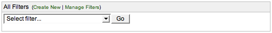

Created by Henri Yandell on my SourceLabs, Inc. time.
This is a simple portlet for the JIRA dashboard that replaces the "Saved Filters" portlet.
It adds the following new functionality:
Install the plugin by downloading the plugin jar, place it in your $JIRA/WEB-INF/lib/ and giving your JIRA a restart.
Peruse the source by downloading the source zip and unpacking.
Please mail these to me at henri-at-sourcelabs.com, or add them as comments to the JIRA plugin page.
Here's a HTML <table> with just four filters selected:

Here's an example of the HTML <select> at work:
And here's the configuration page, so you can be wowed by the feature list: